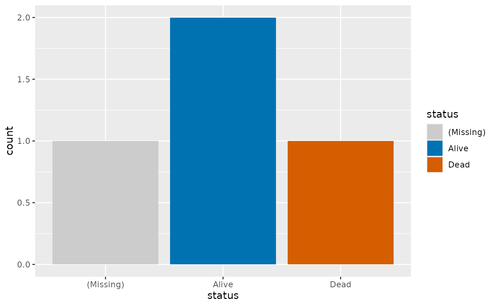

Color and fill scales that apply the role rule to each panel
Source:R/palette-hv.R
scale_fill_hv.RdDiscrete scales that color each panel by hv_role_palette(): event
vermillion, censored blue, missing light gray, and colorblind-safe colors
for everything else. Add one to a page of panels with & and every panel
is colored from its own levels, so a panel without the event still draws
its levels from blue.
Usage
scale_fill_hv(
event = NULL,
censored = NULL,
missing = "(Missing)",
na.value = .HV_ROLE_MISSING,
...
)
scale_color_hv(
event = NULL,
censored = NULL,
missing = "(Missing)",
na.value = .HV_ROLE_MISSING,
...
)
scale_colour_hv(
event = NULL,
censored = NULL,
missing = "(Missing)",
na.value = .HV_ROLE_MISSING,
...
)Arguments
- event, censored
Level names that take the event or the censored color, or
NULLfor none. Names not inlevelsare ignored.- missing
Level name that stands for missing values.
"(Missing)"is the explicit levelhv_eda()adds.- na.value
Color for a real
NA. The default is the missing gray, so anNAand a"(Missing)"level look the same.- ...
Passed to
ggplot2::discrete_scale():name,labels,guideand so on.
Details
scale_colour_hv() is an alias of scale_color_hv(), the same pairing of
British and US names that ggplot2 gives its own color scales.
Colors stay the caller's choice: no constructor or plot() method in this
package applies these scales for you.
A panel with more levels than the colorblind-safe palettes hold is drawn in
ggplot2's default hue palette instead, with a warning naming its level
count, so one variable with many levels does not stop a report. Call
hv_role_palette() directly to get an error in that case.
See also
hv_role_palette() for the rule itself.
Examples
dta <- data.frame(status = c("Alive", "Dead", "Alive", "(Missing)"))
ggplot2::ggplot(dta, ggplot2::aes(status, fill = status)) +
ggplot2::geom_bar() +
scale_fill_hv(event = "Dead", censored = "Alive")
